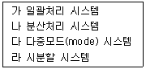
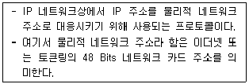

PC정비사-1급 (2018-04-08 기출문제)
1과목: PC운영체제
1. 다음 중 FAT32 파일 시스템에 대해 잘못 설명한 것은?
- 최대 2TB(2048GB) 크기의 불륨을 지원한다.
- Windows 95 OSR2나 Windows 98 이후의 Windows에서만 사용 가능하다.
- 8GB이하의 볼륨에서 클러스터의 크기는 2KB이다.
- 클러스터의 갭(gap)이 FAT16에 비해 적으므로 디스크 공간을 훨씬 효율적으로 사용할 수 있다.
(정답률: 47%)

2. Windows 7 Professional의 레지스트리 구조에 속하지 않은 것은?
- HKEY_LOCAL_CONFIG
- HKEY_CURRENT_CONFIG
- HKEY_CLASSES_ROOT
- HKEY_USERS
(정답률: 45%)
3. 사용자가 로컬 컴퓨터에 로그온을 시도하면 순서에 따라 인증작업이 이루어진다. 이때 사용자가 제공한 정보와 SAM의 정보를 비교하여 일치하면 사용자에게 Access Token을 만들어 준다. 이러한 Access Token에 들어있는 정보들로 짝지어져 있는 것은?
- 사용자의 Identification과, 사용자의 보안 설정
- 사용자의 Identification과, 인증 증명서
- 인증 증명서와, 사용자의 보안 설정
- 사용자의 Identification과, 사용자 계정 암호
(정답률: 43%)
4. 파일 확장자 중에서 하드웨어 작업을 제어하거나 장치정보, 스크립트가 들어있는 파일은?
- ini
- bmp
- doc
- hwp
(정답률: 76%)
5. System Configuration Editor로 편집할 수 없는 시스템 파일은?
- win.ini
- desktop.ini
- config.sys
- autoexec.bat
(정답률: 40%)
6. 운영체제의 발달과정 순서로 올바른 것은?

- 라 → 다 → 나 → 가
- 가 → 나 → 다 → 라
- 가 → 다 → 라 → 나
- 다 → 라 → 나 → 가
(정답률: 63%)
7. 매크로내에서 여러 개의 매크로를 호출할 때 사용되는 자료 구조 중 가장 효율적인 것은?
- QUEUE
- TREE
- STACK
- LINKED LIST
(정답률: 42%)
8. 일정기간이나 특정 기능을 제한하여 사용하다가, 정식으로 사용하려면 그에 해당하는 비용을 지불해야 하는 소프트웨어는?
- 그래픽 소프트웨어
- 유틸리티
- 셰어웨어
- 백신
(정답률: 77%)
9. PC의 운영체제로 사용되지 않는 것은?
- DOS
- JAVA
- Linux
- Windows
(정답률: 80%)
10. Windows 7 Professional 에서 하드웨어 장치의 드라이버를 설치 또는 업데이트 한 후 해당 장치가 작동하지 않거나 시스템에 문제가 발생한 경우 이전 드라이버로 되돌리는데 사용하는 기능은?
- 자원 확인
- 드라이버 확인
- 드라이버 롤백
- 드라이버 업데이트
(정답률: 86%)
11. 실행 파일의 확장자가 COM 또는 EXE에 대한 설명으로 올바른 것은?
- EXE 파일은 하나의 세그먼트 내에서 실행된다.
- COM 파일은 일반적으로 EXE 파일에 비해 실행 속도가 빠르다.
- COM 파일은 실행 중 세그먼트의 변경이 가능하다.
- EXE 파일은 COM 파일에 비해서 일반적으로 작다.
(정답률: 48%)
12. 영문자 한 글자를 나타낼 수 있는 최소 단위는?
- 1 bit
- 1 byte
- 1 Kbyte
- 1 Mbyte
(정답률: 68%)
13. 운영체제에서 발생하는 Interrupt에 대한 설명 중 잘못된 것은?
- 어떤 프로세스에게 주어진 시간 할당량이 종료했을 경우
- 어떤 하드웨어에 오류가 발생한 경우
- 어떤 프로세스가 입출력을 위한 시스템 호출을 한 경우
- 어떤 프로세스가 시스템 내부의 다른 프로세스로부터 메시지를 받는 경우
(정답률: 37%)
14. 운영체제(Operating System)에 관한 설명으로 잘못된 것은?
- 컴퓨터의 각 부분을 운영하고 통제하는 가장 기본적인 프로그램의 집단이다.
- 프로그램의 실행을 제어하며 데이터와 파일의 저장을 관리하는 등의 기능을 한다.
- 운영체제의 종류에는 Windows, OS2, UNIX 등이 있다.
- 초기의 인터페이스는 VUI에서 GUI로 발전하였고, 미래에는 CUI로 발전할 전망이다.
(정답률: 68%)
15. Windows 7 Professional에서 구성 가능한 디스크 어레이 구축 방식 중 데이터 손실의 위험을 감수하더라도 고성능을 추구하기 위해 디스크를 병렬로 배치하는 방식은?
- Raid-0
- Raid-1
- Raid-4
- Raid-5
(정답률: 53%)
2과목: PC주변기기
16. 입자가 아주 작은 잉크를 노즐을 이용하여 종이 위에 뿌리는 방식으로 인쇄하는 비충격식 프린터는?
- 잉크젯 프린터
- 레이저 프린터
- 라인 프린터
- 도트 매트릭스 프린터
(정답률: 72%)
17. 뮤직 신디사이저, 악기, 컴퓨터 등을 상호 접속이 가능하도록 하는 인터페이스 규격은?
- MPEG
- MPC
- BUS
- MIDI
(정답률: 73%)
18. 사용중인 비디오카드의 메모리가 1Mbyte이다. 해상도를 1024 x 768로 설정할 경우 표현할 수 있는 최대 컬러수는?
- 16색
- 256색
- 16비트
- 32비트
(정답률: 47%)
19. MP3는 MPEG 오디오 CD 음질의 데이터 용량을 얼마나 줄일 수 있느냐 하는 오디오 압축의 방식을 말한다. 이때 CD 음질의 기준이 되는 샘플레이트와 데이터 비트수는?
- 56KHz - 8bits
- 44.1KHz - 16bits
- 44.1KHz - 8bits
- 56KHz - 16bits
(정답률: 54%)
20. 운영체제에 아무런 이상이 없이 빠른 속도로 그래픽 카드를 제어할 수 있는 표준 규격이 아닌 것은?
- DirectX
- Open GL
- DCI
- DMA
(정답률: 45%)
21. DRAM과 CPU 사이에서 데이터 병목 현상을 제거하기 위해 CPU에 장착한 메모리는?
- L2 Cache
- C2 Cache
- DMA
- CF-RAM
(정답률: 68%)
22. PC에서 사용 가능한 DVD 매체의 종류가 아닌 것은?
- DVD-R
- DVD-RW
- DVD-RAM
- DVD-RM
(정답률: 45%)
23. 컴퓨터의 입출력 장치로 사용되지 않는 것은?
- Register
- CD-RW
- OMR
- Printer
(정답률: 60%)
24. L2 캐시의 동작 방식이 아닌 것은?
- 비동기 방식
- 동기 방식
- 슬롯 방식
- 파이프라인 버스트 방식
(정답률: 46%)
25. CPU 클럭을 계산하는 방법으로 올바른 것은?
- 시스템 클럭 + 배율
- 시스템 클럭 * 배율
- 시스템 클럭 / 배율
- 시스템 클럭 = 배율
(정답률: 75%)
26. 서로 다른 디스크를 마치 하나의 디스크인 것처럼 인식을 하도록 하는 기능을 표현하는 용어는?
- FAT32
- RAID
- NTFS
- READ
(정답률: 76%)
27. 하드디스크를 선택할 때 반드시 살펴보아야 할 것들이 있다. 하드디스크의 선택 요건으로, 중요도가 낮은 것은?
- 데이터 전송 속도(Average Transfer Speed)
- 회전 수(Spindle Motor RPM)
- 저장 용량(Storage Capacity)
- 플래터의 두께(Platter Thickness)
(정답률: 75%)
28. 하드웨어에 속하지 않는 것은?
- 디바이스 드라이버
- CPU
- 주기억장치
- 모니터
(정답률: 73%)
29. 이론적으로 가장 빠른 속도를 내는 방식은?
- Serial
- USB 3.0
- Parallel
- USB OTG
(정답률: 74%)
30. 모니터로 전송할 데이터를 저장하는 공간은?
- 프레임버퍼
- 버퍼
- DAC
- 비디오칩셋
(정답률: 43%)
3과목: 디지털 논리회로
31. 십진수 145를 BCD코드로 올바르게 표시한 것은?
- 0010 0000 0001
- 0001 0100 0101
- 0000 1100 1001
- 0001 0010 1001
(정답률: 60%)
32. 다음 중 가중치부호이면서 자보수 부호인 것은?
- 2-5진 부호
- 그레이 부호
- 5421부호
- 2421부호
(정답률: 40%)
33. 오류검출 부호가 아닌 것은?
- 해밍 부호
- 패리티 부호
- 2-5진 부호
- 3초과 부호
(정답률: 47%)
34. 부울대수식에서 “A＋bar A B”를 간단히 하면?
- A
- 0
- A×B
- A＋B
(정답률: 42%)
35. 다음 중 2진수 011010의 2의 보수는?
- 011001
- 100101
- 100110
- 010110
(정답률: 40%)
4과목: PC유지보수
36. 컴퓨터에 전원이 들어오면 BIOS 내의 설정 값에 의해 컴퓨터가 장치들을 점검하고 사용 가능하도록 준비를 하는 과정은?
- BOOT
- OS
- POST
- RAM
(정답률: 61%)
37. 컴퓨터 부팅 중에 [BIOS Check Sum Error] 메시지가 출력되었을 때 이를 해결하는 방법으로 올바른 것은?
- 메인보드의 배터리를 교체한다.
- 키보드 커넥터를 확인한다.
- 메인 메모리를 교체한다.
- CPU를 교체한다.
(정답률: 60%)
38. BIOS가 저장되어 있는 장소는?
- CPU
- ODD
- ROM
- HDD
(정답률: 72%)
39. [DISK BOOT FAILURE, INSERT SYSTEM DISK AND PRESS ENTER] 에러 메시지가 나타날 때의 원인에 따른 해결방법 중 잘못된 것은?
- 부팅할 수 없는 디스켓이 플로피디스크 드라이브에 들어있는 경우, 디스켓을 빼고 부팅을 시도한다.
- 시스템 파일이 손상된 경우, 시스템 파일을 복구한다.
- 부팅 순서가 잘못 설정된 경우, 파티션을 재설정한다.
- 부팅 하드디스크와 메인보드간의 연결 케이블이 헐거워지거나 빠진 경우에 발생 할 수 있으므로 케이블을 재 설정한다.
(정답률: 43%)
40. 하드디스크가 Active 상태로 설정되지 않았을 경우, 나타나는 메시지는?
- Device overflow
- Hard disk diagnosis fail
- No ROM Basic system halted
- Error initializing hard drive controller
(정답률: 36%)
41. Windows에서 마우스를 찾지 못하거나 커서가 움직이지 않는다. 다음 중 원인으로 볼 수 없는 것은?
- 마우스가 포트에 제대로 연결되지 않았다.
- 마우스의 리소스가 다른 장치와 충돌한다.
- CMOS SETUP의 마우스 관련 설정이 잘못되었다.
- USB 키보드를 사용 중이라면, USB 마우스를 사용할 수 없다.
(정답률: 80%)
42. 과도한 CPU 오버 클러킹으로 인하여 발생되는 문제가 아닌 것은?
- 시스템이 자주 다운된다.
- CPU에 과도한 발열이 생긴다.
- CPU에 설치된 팬이 멈춘다.
- CPU의 수명을 단축시킨다.
(정답률: 77%)
43. 회로시험기를 이용하여 연결선의 단선 여부를 알아내기 위한 회로시험기의 선택스위치 위치로 올바른 것은?
- ACV 전압측정 위치
- DCV 전압측정 위치
- OHM 측정 위치
- A(ampere) 측정 위치
(정답률: 38%)
44. BIOS에서 제어할 수 없는 것은?
- 부트 디스크 설정
- 물리적 메모리 용량 설정
- 하드디스크 타입(Type) 설정
- IRQ 및 DMA 설정
(정답률: 70%)
45. PC 조립을 마친 후 컴퓨터에 전원을 넣었는데, 모니터 화면에 아무것도 나타나지 않을 때, 점검하는 과정 중 잘못된 것은?
- 컴퓨터에 전압은 연결됐는지, 적정 전압에 맞게 설정했는지 확인한다. 또한 파워 서플라이 자체에 전원 ON/OFF 스위치가 있는 것도 있는데, 이 스위치를 ON으로 설정했는지 확인한다.
- 그래픽카드의 연결단자와 모니터 연결 케이블이 정확히 연결되었는지를 확인한다.
- 그래픽 카드의 장착 상태나 그래픽 카드에 이상이 없는지 확인한다.
- 하드디스크와 CD-ROM 드라이브, 플로피디스크 드라이브를 연결하는 케이블이 올바르게 연결되었는지 확인한다.
(정답률: 77%)
46. ODD - HDD 순으로 부팅되는 PC를 HDD - ODD순서로 변경하기 위해 바이오스에서 설정해야 하는 메뉴는?
- Disk Swap
- POWER ON Function
- I/O Device Configuration
- Boot Sequence
(정답률: 77%)
47. [Windows를 사용하던 중 “KERNEL32.DLL에서 잘못된 연산이 수행되었습니다.]라는 메시지가 나타나는 이유로 잘못된 것은?
- 어플리케이션간 메모리 충돌이 일어날 때
- KERNEL32.DLL의 버전이 다르거나 손상된 경우
- CPU와 메모리의 FSB가 맞지 않을 경우
- 메인 메모리가 불량인 경우
(정답률: 41%)
48. 로우레벨 포맷에 대한 설명으로 잘못된 것은?
- 물리적상태는 그대로 둔 채 논리적인 포맷만을 하므로 시간이 짧게 걸린다.
- 백신 프로그램이나 포맷으로도 바이러스가 잡히지 않을 경우 진행한다.
- BIOS 설정에 로우레벨 포맷 기능이 있는 경우, 그것으로 수행하거나 별도의 프로그램을 이용한다.
- 로우레벨 포맷을 통해 디스크의 배드 섹터와 같은 물리적 결함은 복구되지 않을 수도 있다.
(정답률: 63%)
49. 프로그램을 안전하게 제거하는 방법으로 잘못된 것은?
- 제어판의 프로그램 추가/제거 기능을 이용한다.
- 프로그램에서 제공하는 Uninstall 기능을 이용한다.
- 탐색기에서 프로그램 폴더를 찾아 삭제한다.
- 클린 스윕(Clean Sweep)과 같은 설치/제거 관리 프로그램을 이용한다.
(정답률: 74%)
50. PC에 정해진 시간동안 작업을 하지 않으면 자동으로 전원을 절전해주는 Award 바이오스의 BIOS SETUP에 해당되는 것은?
- Integrated Peripherals
- Ide Hdd Auto Detection
- Quick Power On Self Test
- Power Management Setup
(정답률: 71%)
5과목: PC네트워크
51. Windows에서 하나의 NIC에 여러 가지 프로토콜을 사용할 수 있게 하는 것은?
- 라우팅 서비스
- 공유 액세스
- 바인딩
- 멀티 프로토콜
(정답률: 38%)
52. 다음에서 설명하는 프로토콜은?

- TCP/IP
- SNMP
- ARP
- RARP
(정답률: 46%)
53. 네트워크의 TCP는 무엇의 약자인가?
- Transfer Communication Protocol
- Transmission Control Protocol
- Transfer Control Protocol
- Telecommunication Control Protocol
(정답률: 44%)
54. 다음 중 네트워크 관리 및 네트워크 장치와 동작을 감시, 총괄하는 프로토콜은?
- AMIP
- SNMP
- SMTP
- POP
(정답률: 61%)
55. OSI 참조 모델의 7계층 중 구문 변환과 문맥 제어 서비스를 제공하는 계층으로 올바른 것은?
- 세션 계층
- 응용 계층
- 네트워크 계층
- 프리젠테이션 계층
(정답률: 41%)
56. 가장 빠른 통신 속도를 낼 수 있는 전송 매체는?
- Twisted Pair
- Optical Fiber
- Coaxial Cable
- Thin Cable
(정답률: 74%)
57. IP 주소에 대한 다음 설명 중 잘못된 것은?
- 서브넷 마스크는 네트워크 내의 IP 주소들을 효율적으로 분할하기 위해 사용된다.
- IP 주소는 네트워크의 규모에 따라 A, B, C 3개의 클래스로 지정할 수 있다.
- 서브넷 마스크를 이용하면 C클래스의 IP 주소도 여러 개의 분할된 네트워크로 분할할 수 있다.
- IP 주소의 각 클래스는 최상위 88비트를 이용해 결정한다.
(정답률: 64%)
58. 인터넷 IP 주소에서 숫자로 표현하는 주소를 사람이 알기 쉽게 문자로 표현하는 것은?
- Domain Name
- IP Address
- Java
- Web Browser
(정답률: 69%)
59. 컴퓨터 통신에서 컴퓨터간의 정보 교환을 가능하게 하기 위하여 규정된 통신규약은?
- 인터페이스
- 프로토콜
- 터미널
- 샘플링
(정답률: 78%)
60. 어떤 컴퓨터든 통신 세션을 시작할 수 있는 통신 모델을 지칭하며 네트워크에 연결되어 있는 모든 컴퓨터들이 서로 대등한 입장에서 데이터나 주변장치 등을 공유할 수 있다는 의미를 담고 있는 모델은?
- Client/Server
- Master/Slave
- Peer to Peer
- Network to Network
(정답률: 62%)